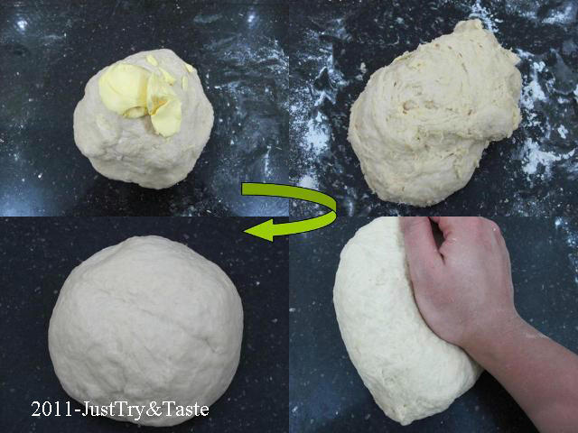
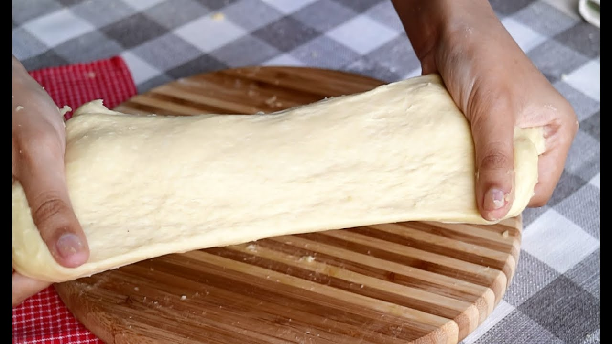

Resep Kue Maryam

-
Bahan-bahan:
-
250 gr tepung terigu
-
1 butir telur
-
3 sdm margarin, lelehkan
-
100 ml air hangat
-
2 sdm susu bubuk(optional)
-
1/2 sdt garam
-
margarin leleh untuk olesan
-
minyak untuk merendam
Langkah-langkah::
1. Campur semua bahan roti jadi satu
2. Uleni sampai kalis(aku pake tangan)jangan takut lengket ya, lumuri tangan sesekali dg tepung(tapi jangan menambahkan tepung)uleni terus sampai adonan kalis.

3. Kalisnya adonan canai tidak sekalis adonan roti ya, kira2 seperti ini sudah cukup.
